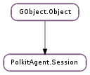

| Name | Type | Flags | Description |
|---|---|---|---|
| cookie | str | r/w/c | The cookie obtained from the PolicyKit daemon |
| identity | Polkit.Identity | r/w/c | The identity to authenticate |
| Name | Parameters | Return | Description |
|---|---|---|---|
| completed | bool | Emitted when the authentication session has been completed or cancelled. The gained_authorization parameter is True only if the user successfully authenticated. Upon receiving this signal, the user should free session using GObject.Object.unref (). | |
| request | str, bool | Emitted when the user is requested to answer a question. When the response has been collected from the user, call PolkitAgent.Session.response (). | |
| show-error | str | Emitted when there is information related to an error condition to be displayed to the user. | |
| show-info | str | Emitted when there is information to be displayed to the user. |
Bases: GObject.Object
The PolkitAgent.Session class is an abstraction used for interacting with the native authentication system (for example PAM) for obtaining authorizations. This class is typically used together with instances that are derived from the PolkitAgent.Listener abstract base class.
To perform the actual authentication, PolkitAgent.Session uses a trusted suid helper. The authentication conversation is done through a pipe. This is transparent; the user only need to handle the PolkitAgent.Session ::request, PolkitAgent.Session ::show-info, PolkitAgent.Session ::show-error and PolkitAgent.Session ::completed signals and invoke PolkitAgent.Session.response () in response to requests.
If the user successfully authenticates, the authentication helper will invoke a method on the PolicyKit daemon (see Polkit.Authority.authentication_agent_response_sync ()) with the given cookie. Upon receiving a positive response from the PolicyKit daemon (via the authentication helper), the PolkitAgent.Session ::completed signal will be emitted with the gained_authorization paramter set to True.
If the user is unable to authenticate, the PolkitAgent.Session ::completed signal will be emitted with the gained_authorization paramter set to False.
| Parameters: |
|
|---|---|
| Returns: | A PolkitAgent.Session. Free with GObject.Object.unref (). |
| Return type: |
Creates a new authentication session.
The caller should connect to the PolkitAgent.Session ::request, PolkitAgent.Session ::show-info, PolkitAgent.Session ::show-error and PolkitAgent.Session ::completed signals and then call PolkitAgent.Session.initiate () to initiate the authentication session.
Cancels an authentication session. This will make session emit the PolkitAgent.Session ::completed signal.
Initiates the authentication session. Before calling this method, make sure to connect to the various signals. The signals will be emitted in the thread-default main loop that this method is invoked from.
Use PolkitAgent.Session.cancel () to cancel the session.
| Parameters: | response (str) – Response from the user, typically a password. |
|---|
Function for providing response to requests received via the PolkitAgent.Session ::request signal.